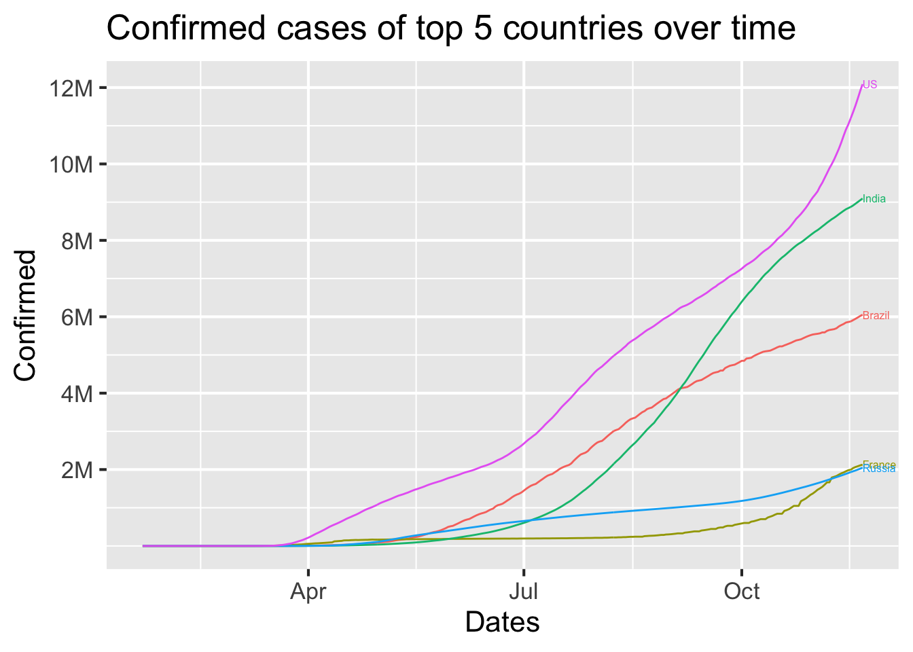
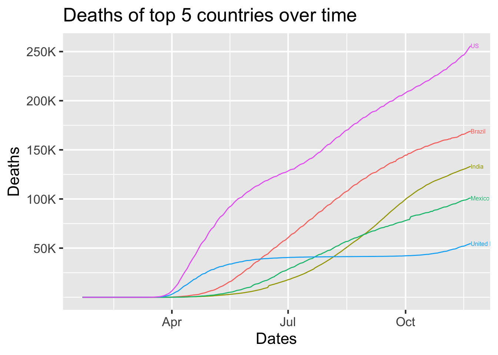
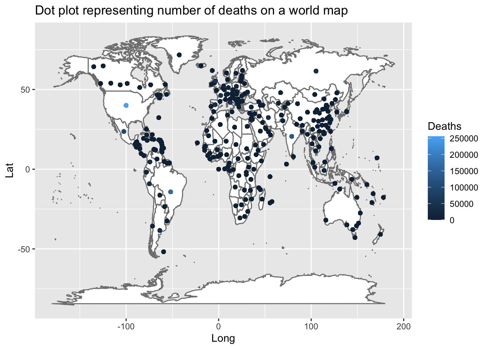
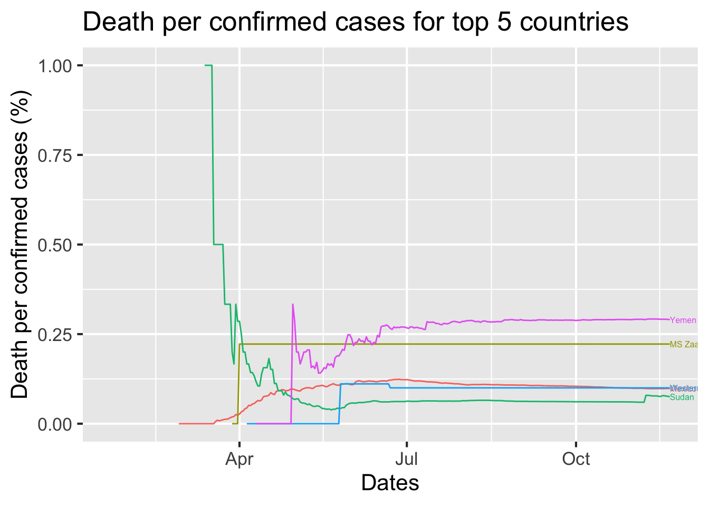
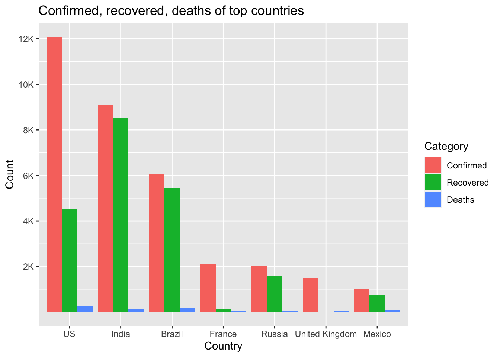

Chapter 5 Results

The graph above shows the number of confirmed cases of the five countries with the most confirmed cases. The five countries are United States, India, Brazil, Russia, and France. From the graph, we see that the slope of the lines for all five countries (except Russia) do not plateau but rather increases, meaning that the spread of the pandemic is getting worse and worse.
The graph above shows the number of recovered cases of the five countries with the most recovered cases. We see the same five countries, United States, India, Brazil, Russia, and France. Even though the top five countries are the same, there are more recovered cases in India and Brazil compared to the United States. This is somewhat unexpected since US exceeded India and Brazil in the number of confirmed cases by approximately 3 million and 6 million, yet there are much fewer recovered cases in the United States.

The graph above shows the number of deaths of the five countries with the most deaths. As we saw from the previous graph of the confirmed cases, we can see that the US, India, and Brazil have made the top 3 here again since more confirmed cases would naturally lead to more deaths. One interesting thing that we see here is that Mexico, which seemed to have not as many cases as US, India, or Brazil, shows a high number of deaths.

The plot above is the dot plot of the world map representing number of deaths in each country. As we have discovered from the previous paragraph, we can see that the top three countries, the United States, India, and Brazil display bright blue dots.

We are now looking at the cases per death for the five countries with the highest rates. We see that Yemen has the highest death rate followed by MS Zaandam. The graph seems to plateau off, so we went back to the data to check and found out that the number of confirmed cases and deaths don’t change starting at a certain point. Since there were no changes made, we may conclude that there were no more new cases of the virus found after that date. (Or it could be that the data wasn’t updated after that date and CSSE copied and pasted the number of cases to fill in the missing values)s

Here we have a bar chart of confirmed, recovered, and death cases of the countries that we found in the previous plots. In this bar chart, it’s a lot easier to compare the counts between the three categories within each country. However, since the number of deaths is relatively small compared to that of confirmed and recovered, it’s a little hard to compare deaths to confirmed and recovered.
Here we have a Cleveland dotplot that shows number of confirmed and recovered cases for 20 countries with the most confirmed cases. By using this Cleveland dotplot, it is much easier to see multiple countries in a single ploot compared to the bar chart we had above. In this plot, we can see that the United States has a large difference between the number of confirmed and the number of recovered cases while other countries seem to have relatively smaller gaps.